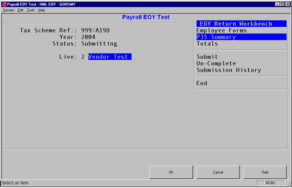

Return Workbench
The workbench has a menu with options that are tailored to the returns status. The options are:
- Employee Forms - Displays the employees within the PAYE scheme and allows you to change their form type, review, and update form details.
- P35 Summary - Shows/updates P35 details.
- Totals - Shows totals from the P14 forms.
- Complete - Validates the return content and, if acceptable, sets the return to Complete.
- Submit
- Validation Errors - View errors detected in the return during attempted completion.
- Un-Complete - Change the status of a Complete return to Incomplete, used to allow an update after completion.
- Submission History - View the details of attempted submissions for this return.
- Add amended P14 - Amended returns only require forms for the amended employees, and this option is therefore used to select to add a form.
